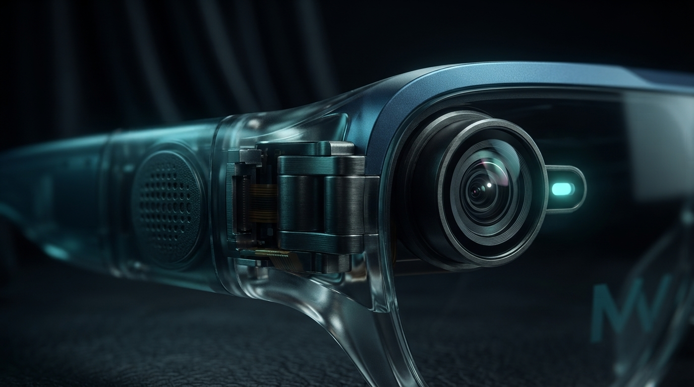
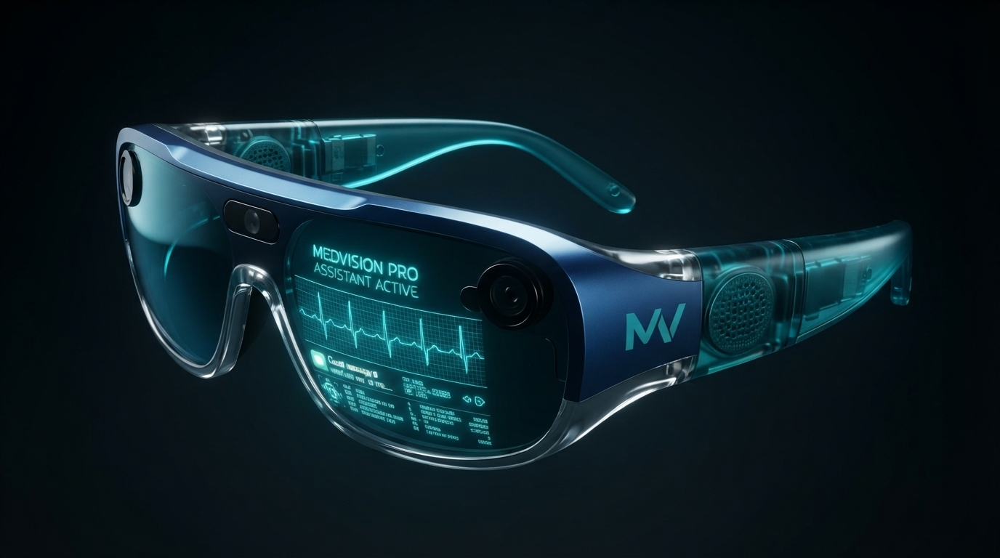
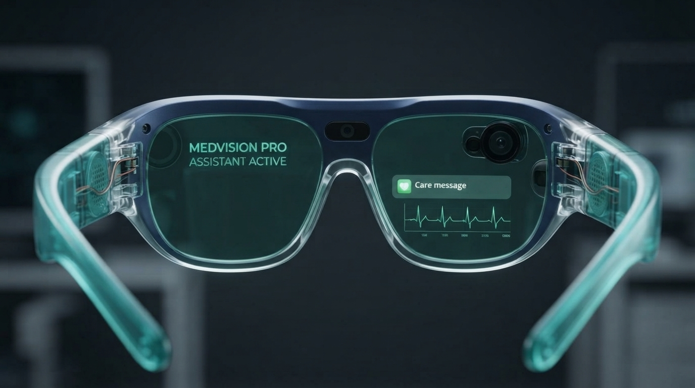
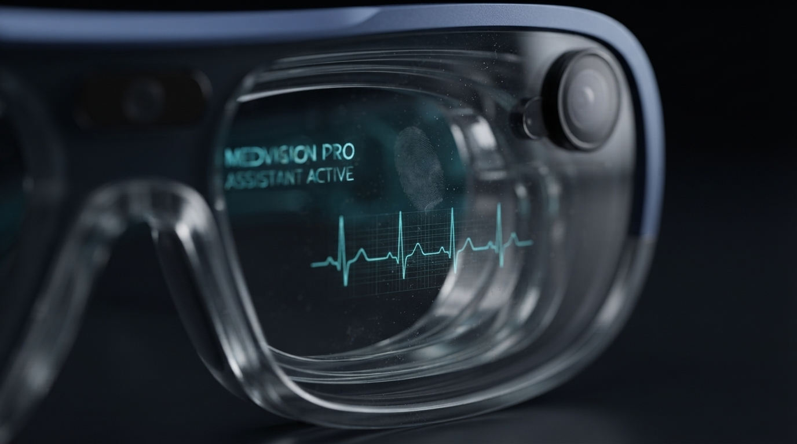
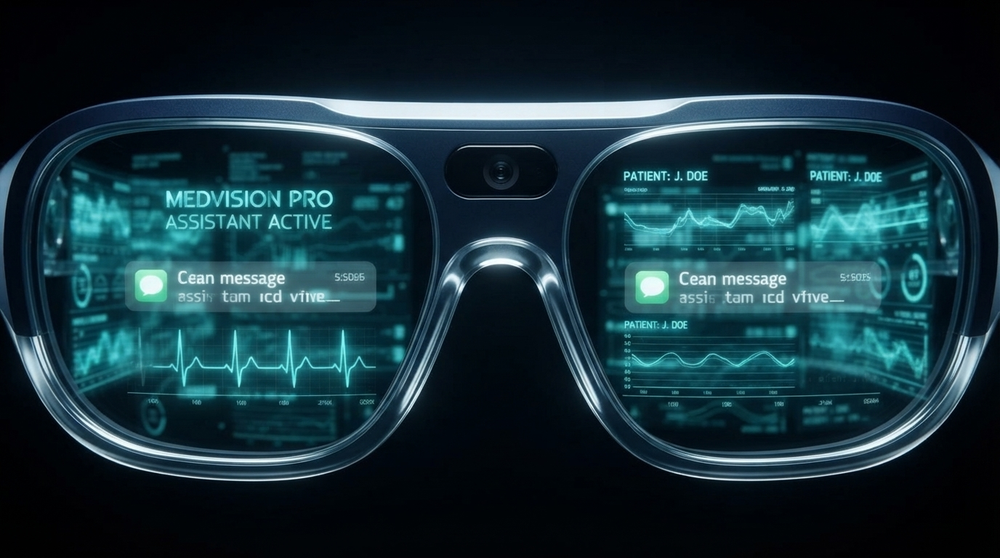
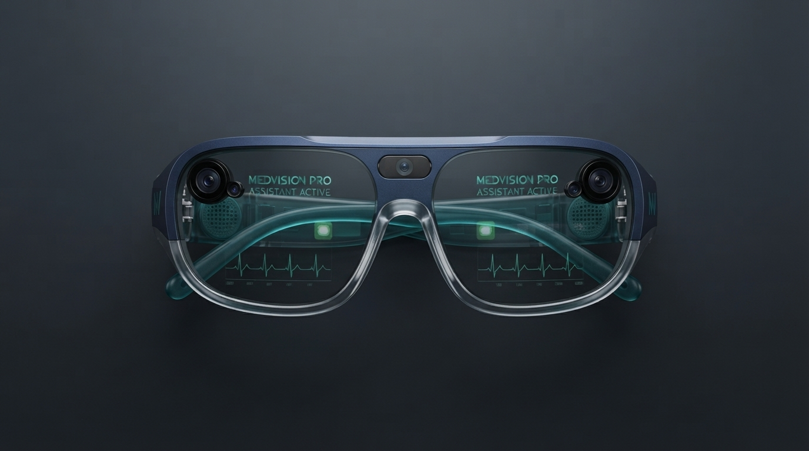
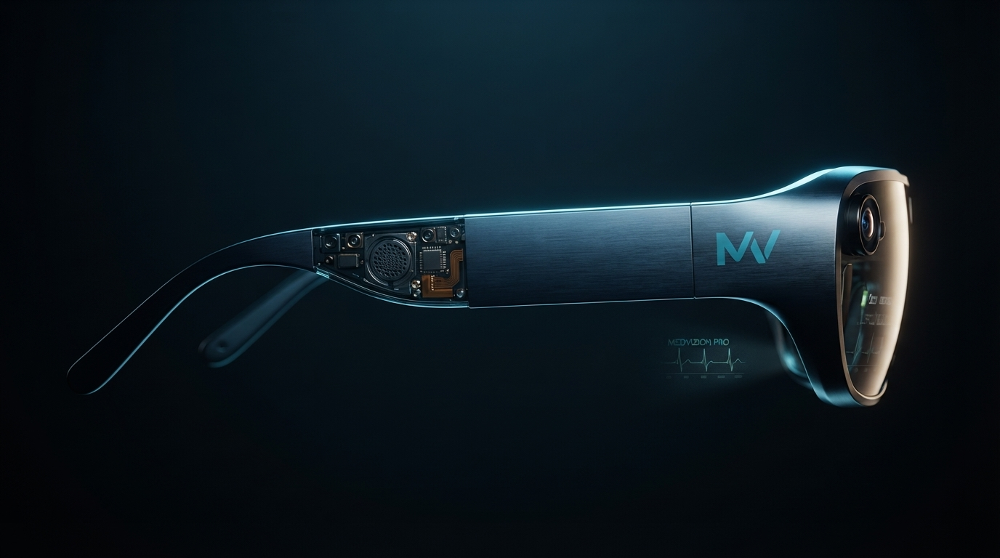
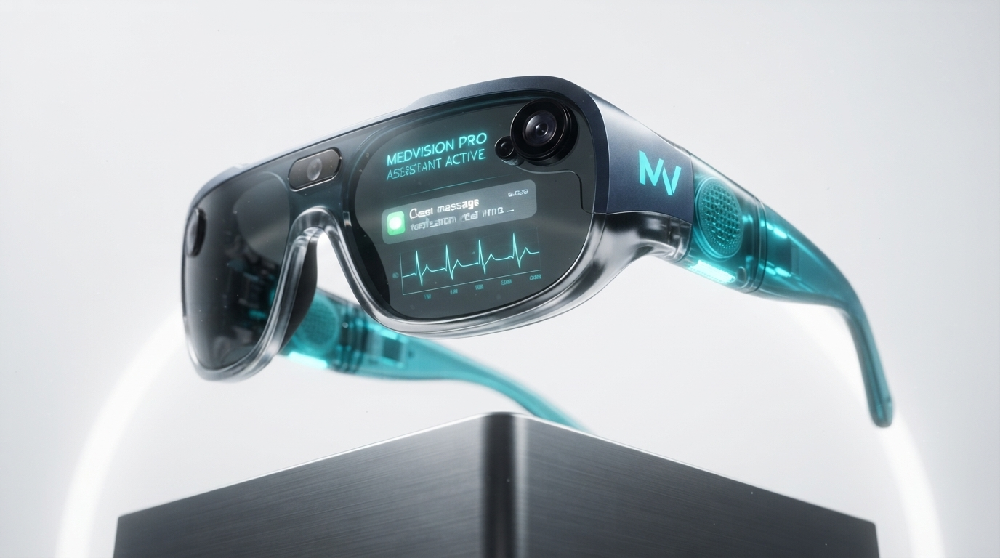
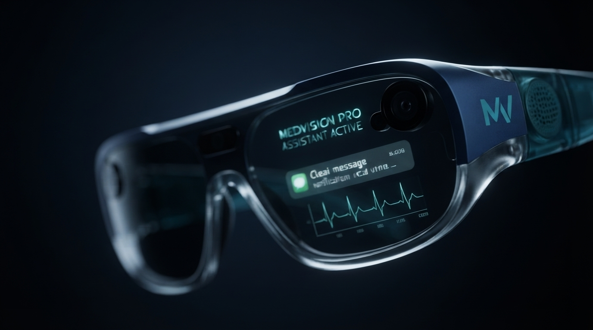
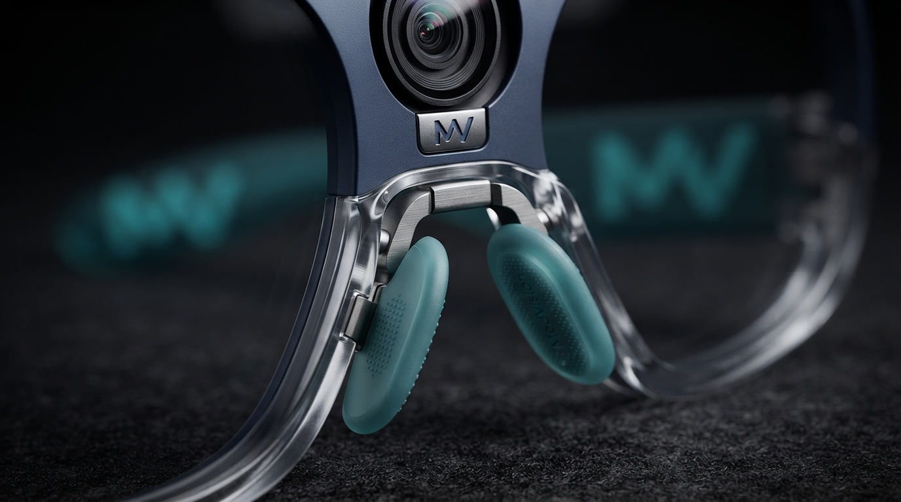

01 — VISÃO COMPUTACIONAL
Reconheça o que importa.
Uma leitura visual em tempo real para destacar referências e organizar informações durante a avaliação.
Ver possibilidades →MEDVISION PRO
MEDVISION PRO
Computação espacial que aproxima as informações clínicas do momento em que elas realmente importam. Menos telas. Mais presença.
Conheça o MedVision Pro ↓01 — VISÃO COMPUTACIONAL
Uma leitura visual em tempo real para destacar referências e organizar informações durante a avaliação.
Ver possibilidades →02 — INTERAÇÃO NATURAL
Comandos de voz tornam a consulta ao contexto clínico fluida, sem interromper o procedimento ou o diálogo.
Conhecer a interface →
PENSADO ATÉ O ÚLTIMO DETALHE
Uma plataforma de realidade aumentada criada para se adaptar ao fluxo da assistência, não para acrescentar uma nova camada de complexidade.
O MEDVISION PRO, POR TODOS OS ÂNGULOS





PARA EQUIPES QUE NÃO PODEM PARAR
Contexto clínico acessível para uma conversa mais atenta e uma triagem mais organizada.
Informação relevante no campo de visão para apoiar decisões sob pressão.
Uma nova superfície para orientar, demonstrar e aprender dentro do ambiente clínico.

UMA NOVA PERSPECTIVA
Informação no lugar certo.
Seu foco onde sempre esteve.
SOBRE A MEDVISION
Construímos interfaces para ambientes onde atenção, confiança e tempo são essenciais. Nossa visão une design de produto, inteligência artificial e prática clínica para tornar o cuidado mais conectado.
Conheça nossa visão →PERGUNTAS FREQUENTES
Encontre respostas iniciais ou fale diretamente com a nossa equipe.
Não. A plataforma é projetada como apoio ao profissional e deve ser utilizada de acordo com os protocolos e a avaliação clínica responsável.
A arquitetura é preparada para conversar com fluxos e dados clínicos compatíveis com padrões como FHIR. Cada implantação é avaliada com a equipe de tecnologia da instituição.
Sim. Use o formulário de contato abaixo para iniciar uma conversa sobre o seu cenário de uso.
CADA DETALHE, MAIS DE PERTO
Deslize para descobrir todos os ângulos do produto.


